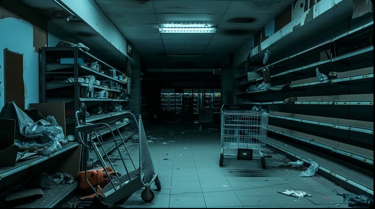

Du näherst dich der Lebensmittelabteilung und hoffst das die Lebensmittel noch haltbar sind. Als du um die nächste Ecke gehst siehst du schon die ersten Kühlregale. Diese sind aber leer, du fragst dich: „Warum sind die Regale leer, ist etwa noch jemand hier gewesen? Etwa andere Überlebende?" Du gehst weiter und entdeckst eine Tür die zum Lager führt. Vielleicht findest du dort noch etwas Brauchbares?
Ins Lager gehen Zur Fleischabteilung